Космос — это почти пустое пространство, которое окружает нашу планету.
Мы готовы ответить на самые популярные ваши вопросы: почему в космосе
невесомость, почему в космосе нельзя дышать, как космос возник или
откуда появился. А как насчет философских вопросов: откуда появился
космос или есть ли у космоса начало и конец? Как себя чувствуют
космонавты на МКС и каким правилам должны придерживаться космонавты
находясь на орбите нашей планеты? Все ответы вы сможете найти у нас на
сайте!
Солнечная система
Солнечная система — пространство, включающее в себя Солнце и все
естественные космические объекты, обращающиеся вокруг него. Возраст
около 4,57 млрд лет. Расположена во Вселенной по адресу: Местное
межзвездное облако, Местный пузырь, Рукав Ориона, Млечный Путь, Местная
группа галактик. Вращается вокруг центра Галактики на расстоянии от него
примерно 27 000 световых лет с периодом обращения 225-250 млн лет.
Радиус Солнечной системы составляет примерно 100 а.е.
Солнце относится к классу желтых карликов. В нем сосредоточено 99,866%
всей массы системы. Большинство крупных объектов Солнечной системы
движется практически в одной плоскости, плоскости эклиптики, и
преимущественно в одном направлении, против часовой стрелки. Из них
крупнейшими являются 8 планет. Внутренние — скальные планеты Меркурий,
Венера, Земля и Марс. Остальные — газовые гиганты Юпитер, Сатурн, Уран и
Нептун, которые обладают кольцами, тонкими полосами мелких частиц,
обращающихся по близким орбитам практически в унисон. Все планеты, кроме
Меркурия и Венеры, обладают также спутниками, от одного до нескольких
десятков.
Планеты солнечной системы
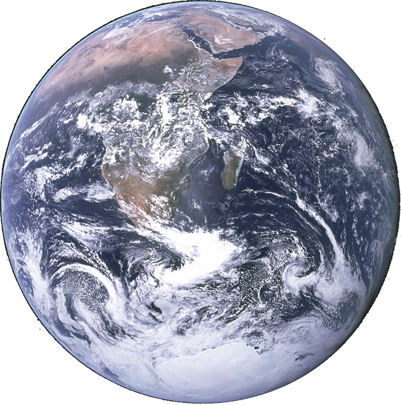
Земля
Масса: 5.97237
Радиус: 6378.1366
Температура: 29°С
Юпитер
Масса: 1.89819
Радиус: 71492
Температура:21 °С
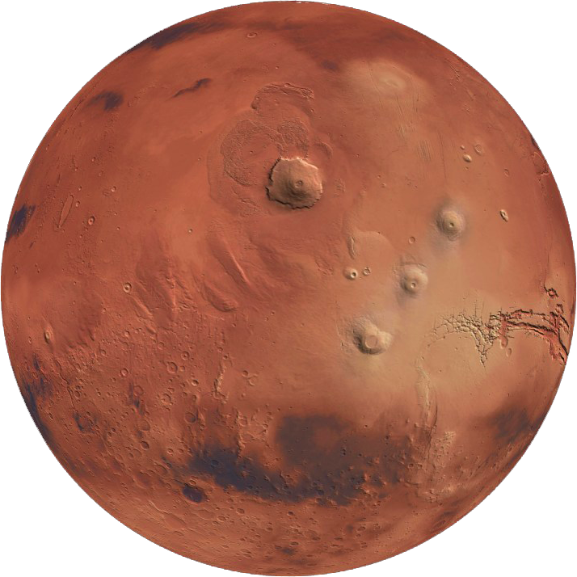
Марс
Масса: 6.41712
Радиус: 3396.19
Температура: -40 °С
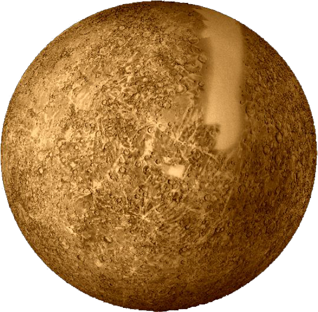
Меркурий
Масса:3.30114
Радиус: 2440.53
Температура: 349,9 °C
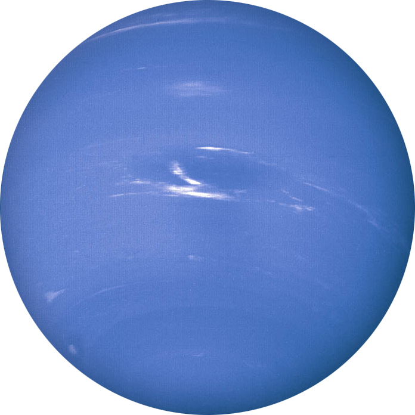
Нептун
Масса:1.02413
Радиус:24764
Температура: −220 °C
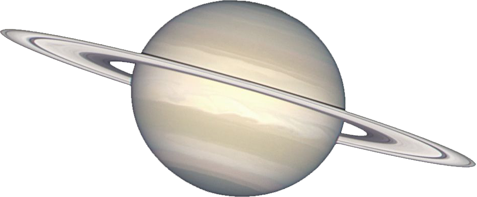
Сатурн
Масса: 5.68336
Радиус: 60268
Температура: 150 °С
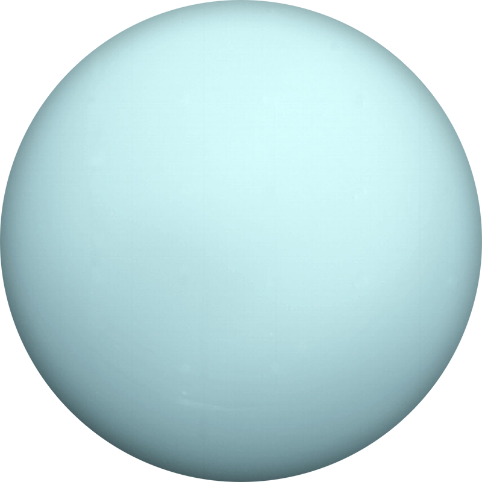
Уранус
Масса: 8,681E25
Радиус: 25 362
Температура: - 224 °C
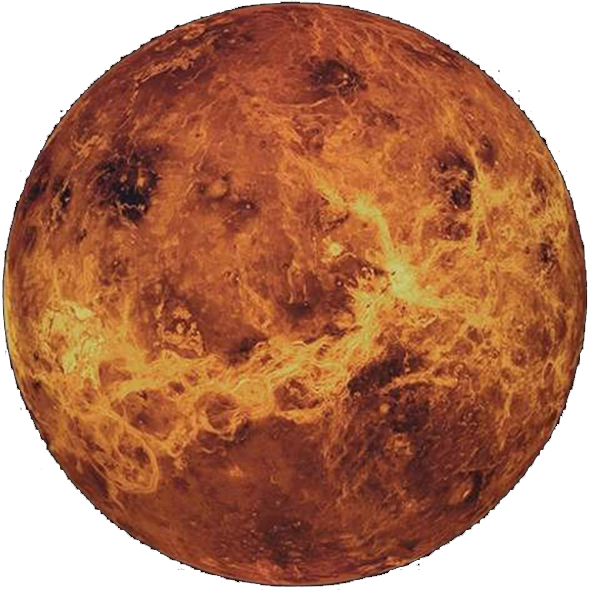
Венера
Масса: 4,867E24
Радиус: 6 051,8
Температура: 462 °C
Сила притяжения двух небесных тел
О нас
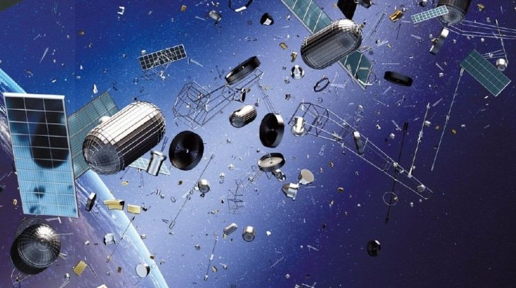
К наружным относят те пожары, которые можно оценить визуально.
Чаще всего этот класс бывает при горении зданий, складских помещений,
нефтепродуктов в резервуаре, на открытых технологических установках,
лесных массивах и так далее. Наружные пожары всегда бывают только открытыми.
К внутренним относят пожары, произошедшие внутри здания, а они могут
быть как открытыми, так и закрытыми. Открытые пожары можно оценить при
визуальном осмотре, к примеру, во время горения имущества в зданиях,
оборудования, материалов и другие.
Скрытые пожары чаще всего прячутся в пустотах строительных конструкций,
вентиляции, торфяных залежах. При этом признаки горения можно обнаружить,
они часто выходят через щели, но оценить, насколько силен пожар, очень
трудно. К тому же такой вид пожара непредсказуем и может резко изменить
свое направление.
Наша команда
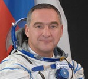
Скворцов Александр Александрович
Дата рождения: 6 мая 1966
КЛАССНОСТЬ: военный летчик 1-го класса
Читать
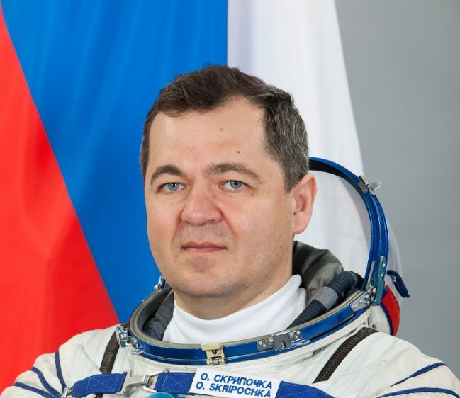
Скрипочка Олег Иванович
Дата рождения: 24 декабря 1969 года
КЛАССНОСТЬ: имеет 1-й разряд по парашютному спорту, выполнил более 300 прыжков с парашютом.
Читать
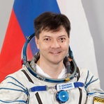
Кононенко Олег Дмитриевич
Дата рождения: 21 июня 1964 года
КЛАССНОСТЬ: инструктор-космонавт-испытатель 1-го класса.
Читать
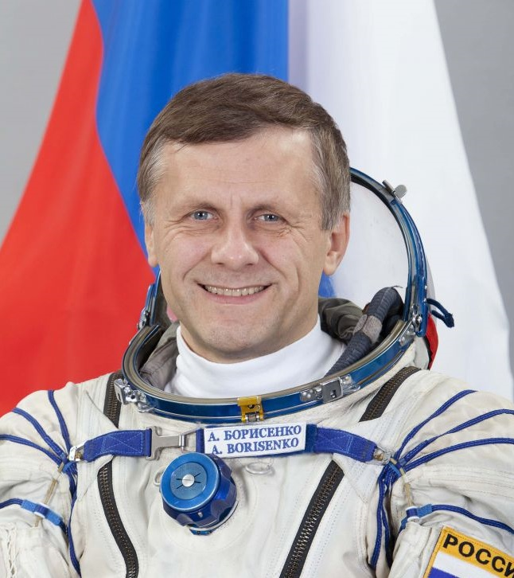
Борисенко Андрей Иванович
Дата рождения: родился 17 апреля 1964 года в г. Ленинграде.
КЛАССНОСТЬ: Инструктор-космонавт-испытатель - начальник группы космонавтов. Космонавт 2 класса.

 sapce-kg@gmail.com
sapce-kg@gmail.com +996(700)87-15-02
+996(700)87-15-02 +996(550)04-83-65
+996(550)04-83-65